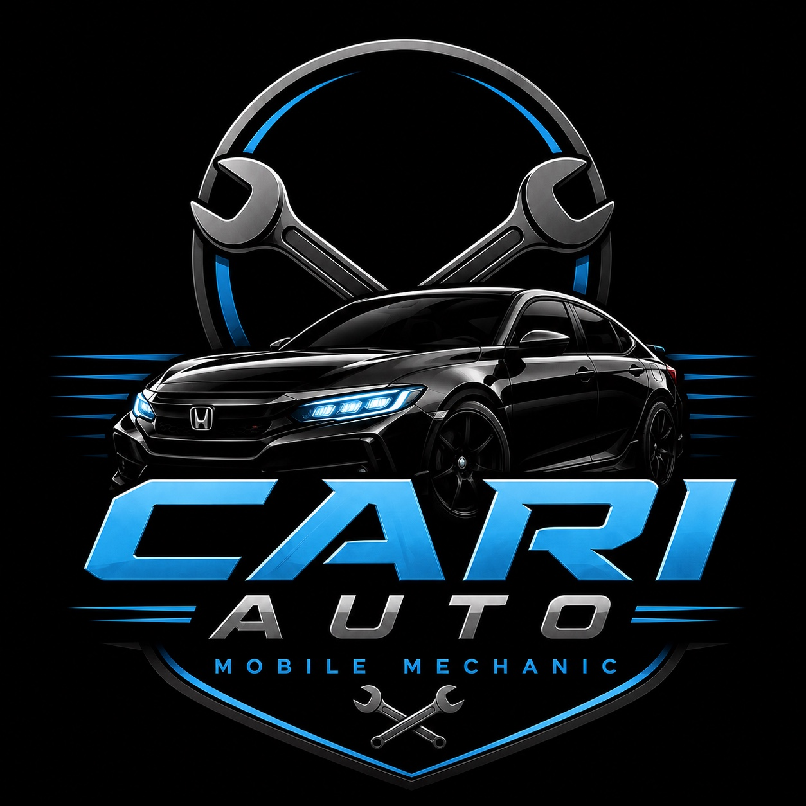

SERVICE · MAINT
SERVICE · MAINT
ROUTINE SERVICEOIL CHANGES &
OIL CHANGES &
TUNE UPS
Routine maintenance brought directly to your location.

CARI AUTOMOBILE MECHANIC · BALTIMORE, MD
Oil changes, transmission fluid service, brakes, tune-ups, suspension work and diagnostics — professional mobile service brought to you.
CARI Auto brings essential automotive service directly to drivers across Baltimore and surrounding Maryland areas. No shop waiting room — just straightforward mobile service where you need it.
From routine oil changes and tune-ups to brakes, suspension, transmission fluid service and diagnostics, CARI Auto helps keep your vehicle moving without the hassle of a traditional shop visit.
CALL US TODAY →Complete automotive solutions from engine work to custom builds. We handle everything with precision, expertise, and competitive pricing.
SERVICE · MAINT
Routine maintenance brought directly to your location.
 SERVICE · FLUID
SERVICE · FLUID
Transmission fluid changes and essential drivetrain maintenance.
 SERVICE · SAFETY
SERVICE · SAFETY
Brake and suspension work to keep your vehicle safe and controlled.
 SERVICE · DIAG
SERVICE · DIAG
Troubleshooting and diagnostics to identify what your vehicle needs.
 MOBILE MECHANIC · ON SITE
MOBILE MECHANIC · ON SITE
Convenient mobile automotive service across Baltimore and surrounding Maryland areas.
MOBILE CONVENIENCE
Service comes to your location, saving you the shop trip.
STRAIGHTFORWARD SERVICE
Clear communication about the work your vehicle needs.
ESSENTIAL REPAIRS
Maintenance, brakes, suspension, diagnostics and more.
Mobile mechanic service throughout Baltimore and surrounding Maryland areas. Call or text with your vehicle and the service you need.
CALL OR TEXTAREABALTIMORE& SURROUNDING MARYLANDCALL410-493-6606CALL OR TEXTIG@_.ITZCARIIFOLLOW CARI AUTOTYPEMOBILE SERVICEWE COME TO YOUTell us your vehicle, location and what service you need.
We’ll coordinate a time and location that works for you at a time that works for you. Usually same-week availability.
Expert technicians handle your job with precision and care. Guaranteed.
Call us today to discuss your project. Call or text with your year, make, model and the service you need. CARI Auto will coordinate mobile service in the Baltimore/Maryland area.